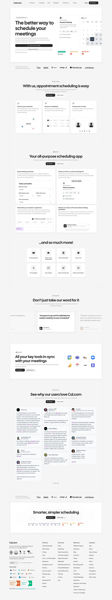

Cal.com 主题
Cal.com 的 Design.md 主题展示，围绕开发工具、媒体内容、极简清爽、公共服务组织页面。
Open-source scheduling. Clean neutral UI, developer-oriented simplicity.
开发工具媒体内容极简清爽公共服务SaaS 产品浅色界面B2B 产品效率工具专业工具

来源
- 来源
- getdesign.md
- 镜像
- github:VoltAgent/awesome-design-md
- 网站
- https://cal.com/
- 详情
- https://getdesign.md/cal/design-md
色板
#101010: #101010#111111: #111111#242424: #242424#374151: #374151#e5e7eb: #e5e7eb#6b7280: #6b7280#898989: #898989#f3f4f6: #f3f4f6#ffffff: #ffffff#f8f9fa: #f8f9fa#f5f5f5: #f5f5f5#1a1a1a: #1a1a1a
字体
display: Cal Sansbody: Intermono: JetBrains Monohints: Cal Sans,Inter,JetBrains Mono,ui-monospace,Manrope,Roboto
圆角
control: 8pxcard: 16pxpreview: 16pxpill: 9999pxsource: design-md
间距
xxs: 4pxxs: 8pxsm: 12pxmd: 16pxlg: 24pxxl: 32pxxxl: 48pxsection: 96pxsource: design-md
使用建议
建议
- 建议：Reserve {colors.primary} (#111111) for primary CTAs and h1/h2 type. Cal.com's button is near-black, not blue。
- 建议：Use Cal Sans for every display headline. Pair with Inter body. Never blur the boundary。
- 建议：Apply negative letter-spacing on display sizes (-0.5 to -2px). Cal Sans without it reads as off-brand。
- 建议：Use {component.feature-card} (light gray) and {component.product-mockup-card} (white with chrome) deliberately — the gray cards signal "abstract feature claim", white cards signal "look at the actual product"。
- 建议：Embed real product UI fragments inside marketing cards. Don't paint marketing illustrations of the product when you can show the product itself。
避免
- 避免：use accent colors ({colors.brand-accent}, badge pastels) on primary CTAs. The system is monochrome at the action layer。
- 避免：bold display weight beyond 600. Cal Sans at 700 reads as bombastic。
- 避免：use rounded radius beyond {rounded.xl} (16px) on cards. Larger radii read as consumer-app, not professional booking software。
- 避免：put dark surface cards anywhere except the footer and the featured pricing tier. The dark surface is a deliberate, scarce signal。
- 避免：repeat the same surface mode in two consecutive bands. Cal.com's pacing alternates white → light-gray → white → product-mockup-card → white → dark-footer。
查看 DESIGN.md